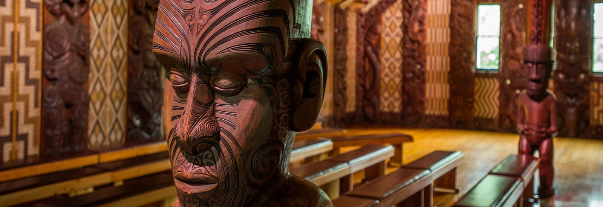
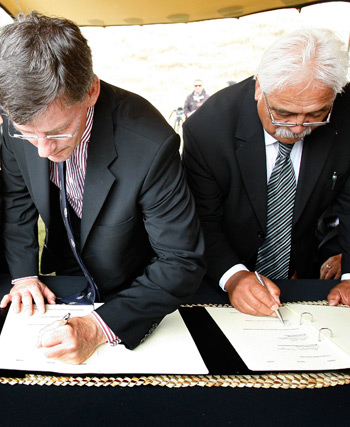

Why is it important?
The Treaty of Waitangi (Māori: Te Tiriti o Waitangi), sometimes referred to as Te Tiriti, is a document of central importance to the history of New Zealand, its constitution, and its national mythos. It has played a major role in the treatment of the Māori people in New Zealand by successive governments and the wider population, something that has been especially prominent from the late 20th century. The treaty document is an agreement, not a treaty as recognised in international law,and has no independent legal status, being legally effective only to the extent it is recognised in various statutes.
Drafting and Signing the treaty
Around this time, there were 125,000 Māori and about 2000 settlers in New Zealand. Sealers and whalers were the first European settlers, followed by missionaries. Merchants also arrived to trade natural resources such as flax and timber from Māori in exchange for clothing, guns and other products.
As more immigrants settled permanently in New Zealand, they weren’t always fair in their dealings with Māori over land. A number of Māori chiefs sought protection from William IV, the King of England, and recognition of their special trade and missionary contacts with Britain. They feared a takeover by nations like France, and wanted to stop the lawlessness of the British people in their country.
As British settlement in New Zealand increased, the British Government decided to negotiate a formal agreement with Māori chiefs to become a British Colony. A treaty was drawn up in English then translated into Māori.
The Treaty of Waitangi was signed on February 6, 1840, at Waitangi in the Bay of Islands. Forty-three Northland Chiefs signed the treaty on that day. Over 500 Māori Chiefs signed it as it was taken around the country during the next eight months.

The Waitangi meeting house, located in Bay of Plenty
Content included in the treaty
The treaty consists of three versions:
the English version, the Māori version, and the official translation.
The English version of the treaty had a different interpretation from the Māori version, leading to ongoing disputes and debates over its precise meaning.
The treaty has three key principles: partnership, participation, and protection. Māori expected protection of their rights and interests, while the Crown sought sovereignty and governance.

Missionary William Colenso, who feared that Māori did not understand what they were signing.

Henry Williams, whose translation of the Treaty was crucial to Māori understanding.
Implementation and Impact
Initial implementation of the treaty was uneven and often disregarded by colonial authorities, leading to land confiscations, injustices, and conflicts. The New Zealand Wars (1845–1872) erupted primarily due to disputes over land and sovereignty, further straining relations between Māori and the Crown. Over time, the treaty became increasingly recognized as a founding document of New Zealand, leading to legislative and legal initiatives aimed at honoring its principles.
Treaty settlements
In the late 20th and early 21st centuries, the New Zealand government initiated a process of treaty settlements to address historical grievances and breaches of the treaty. Treaty settlements involve financial compensation, return of land, and various forms of redress to Māori iwi (tribes) and hapū (sub-tribes) for past injustices. While treaty settlements have helped to address some historical grievances, debates continue over the adequacy and fairness of these settlements.

Governments breached te Tiriti o Waitangi almost from the time it was signed in 1840. In the late 20th century many of these breaches were finally acknowledged. Finding the means to redress injustices has involved careful negotiation.